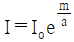

시설원예기사 (2005-03-06 기출문제)
1과목: 원예학개론
1. 서리해의 방지책이 아닌 것은?
- 스프링클러로 살수하여 식물체의 표면을 동결시킨다.
- 개화기가 늦은 품종을 심는다.
- 강전정을 하며 질소시비를 늘인다.
- 생장조절제를 살포하여 개화를 지연시킨다.
(정답률: 알수없음)

2. 포도나무의 신초생장을 억제시키기 위하여 사용되는 약제는?
- GA
- B-9
- OED
- IAA
(정답률: 알수없음)
3. 자연분류법에 의한 과(family)가 다른 것 끼리 짝지어진 것은?
- 쑥 – 쑥갓
- 냉이 - 고추냉이
- 고추 – 토마토
- 감자 - 고구마
(정답률: 알수없음)
4. 정지법에서 주로 복숭아에서 많이 쓰는 것은?
- 변칙주간형, 배상형
- 배상형, 개심자연형
- 개심자연형, 원추형
- 원추형, 울타리형
(정답률: 알수없음)
5. 채소종자의 직파(直播)에 관한 설명 중 적절하지 않은 것은?
- 무와 같은 직근류는 기근발생의 염려가 있으므로 직파한다.
- 무와 당근은 보통 조파(줄뿌림)후 재식 거리에 맞게 솎아준다.
- 열무나 시금치 등 밀식을 필요로 하는 것은 산파(흩어뿌림)한다.
- 파종 후 조류의 피해를 방지하기 위하여 흙과 밀착되도록 눌러주는 것이 좋다.
(정답률: 알수없음)
6. 북지형 오이와 비교한 남지형(南支型) 오이의 특징인 것은?
- 절성성이다.
- 비절성성이다.
- 이식이 어렵다.
- 내서성이 강하다.
(정답률: 알수없음)
7. 다음 화훼 종자 중 발아 수명이 가장 짧은 것은?
- 팬지(pansy)
- 시네라리아(cineraria)
- 거베라(gerbera)
- 페튜니아(petunia)
(정답률: 알수없음)
8. 감자 수확 후 저장에 앞선 전처리(curing)조건을 알맞게 설명한 것은?
- 얼지 않은 범위내에서 온도가 낮을수록 좋다.
- 고온다습한 환경이 유합조직 형성에 효과적이다.
- 저온장해가 발생하지 않는 범위의 낮은 온도가 이상적이다.
- 수확직후 급속히 품온(品溫)을 낮추는 예냉이 필요하다.
(정답률: 알수없음)
9. 숙기 조절법으로 온도조절과 화학물질의 이용이 있다. 그 중 포도의 숙기 조절에 이용되는 물질은?
- GA
- 2, 4, 5-TP
- Atonik
- CCC
(정답률: 알수없음)
10. 시설재배의 토양중에 가장 많은 양이 집적되기 쉬운 염류는?
- Cl
- K2O
- Na2O
- NO3-N
(정답률: 알수없음)
11. 과수종자 발아를 위한 휴면타파에 도움이 되지 못하는 것은?
- 저온처리
- 아브시스산(abscisic acid)처리
- 종피 제거
- 강산처리
(정답률: 알수없음)
12. 여름철 노지에서 primula가 고온피해를 입은 후, 물러져 죽었다. 관계 없는 것은?
- Rhizoctoria 등의 곰팡이나 세균에 의해 곯아 죽은 것이다.
- 비기생 질병에서 유발된 현상이다.
- 여름에 시원하게 해주어야 피해를 줄일 수 있다.
- 질소시비가 중요하다.
(정답률: 알수없음)
13. 엽아삽(葉芽揷)으로 주로 번식하는 것은?
- 베고니아
- 동백나무
- 산세베리아
- 아프리칸 바이올렛
(정답률: 알수없음)
14. 꽃을 대형화 하고자 할 때 가장 적합한 육종방법은?
- 원형질체 융합
- 염색체 배가
- 종속간 교잡
- 아조변이
(정답률: 알수없음)
15. 다음 채소 중 육묘 일수가 가장 짧은 것은?
- 수박
- 토마토
- 가지
- 셀러리
(정답률: 알수없음)
16. 다음 중 꽃눈분화에 있어 녹식물 감응형에 속하는 채소는?
- 배추
- 양배추
- 무
- 순무
(정답률: 알수없음)
17. 국화 전조재배시 100W의 전구를 식물로부터 1m 높이에 설치할 때의 알맞은 간격은?
- 2m
- 4m
- 6m
- 8m
(정답률: 알수없음)
18. 채소의 일반적인 관수점은?
- pF 1.5 ~ 2.5
- pF 2.7 ~ 3.0
- pF 4.2 ~ 4.5
- pF 6.0 ~ 7.0
(정답률: 알수없음)
19. 사과나무 적진병(赤疹病)의 발병 원인은?
- 망간의 과다 흡수
- 질소 부족
- 알칼리성 토양
- 칼슘 공급 과다
(정답률: 알수없음)
20. 다음 중 지생란(地生蘭)인 것은?
- 카틀레야
- 덴드로븀
- 반다
- 심비디움
(정답률: 알수없음)
2과목: 시설원예학
21. 다음 양액의 조성성분 가운데 미량요소만으로 구성된 것은?
- C, O, H, B
- N, P, K, S
- Ca, Mg, Fe, Mo
- Mn, Zn, Cu, Mo
(정답률: 알수없음)
22. 지붕경사가 일정한 온실에서 구조적 측면의 설명으로 옳바른 것은?
- 온실너비가 넓어질수록 용마루와 추녀가 낮아지며 풍압이 커진다.
- 온실너비가 넓어질수록 용마루와 추녀가 낮아지며 풍압이 작아진다.
- 온실너비가 넓어질수록 용마루와 추녀가 높아지며 풍압이 커진다.
- 온실너비가 넓어질수록 용마루와 추녀가 높아지며 풍압이 작아진다.
(정답률: 알수없음)
23. 다음 중 기울기가 60 ~ 80°의 경사진 베드를 설치한 양액재배방식으로 가장 적당한 것은?
- NFT(박막순환 양액재배)
- M식 양액재배
- 등량교환식 양액재배
- 액면저하방식 양액재배
(정답률: 알수없음)
24. 다음 중 온실작물의 도장억제를 위한 방법으로 적절치 못한 것은?
- 배지내 수분과 양분의 제한
- 생장촉진제의 이용
- 물리적 자극의 이용
- 주·야간 온도 차이를 줄임
(정답률: 알수없음)
25. 유리온실의 골격자재로 사용되는 알루미늄(aluminium)의 특징 중 옳게 설명된 항은?
- 골재가 다소 무겁다.
- 골재에 의한 골격율이 높다.
- 성형이 곤란하며 시공이 어렵다.
- 내부식성이 강하고 광투과율을 증가 시킬 수 있다.
(정답률: 알수없음)
26. 식물엽록소 분자의 구성원소로서 약 15 ∼ 20%를 차지하며, 생리적 기능은 광합성 작용과 인산화 과정을 활성화 시키는 효소의 보조인자로 작용하는 원소는?
- K
- Mg
- N
- P
(정답률: 알수없음)
27. 온실의 구조에서 버팀대(bracing)의 용도는?
- 벽체 골조에 기둥 상단에서 걸리는 하중에 대한 지지
- 적설하중 등에 의한 지붕위의 하중에 대한 지지
- 대들보와 처마도리 사이의 서까래의 하중지지
- 온실 모서리에 걸리는 과다한 풍하중에 대한 지지
(정답률: 알수없음)
28. 시설작물의 해충방제에 이용되는 천적이 아닌 것은?
- 칠레이리응애
- 온실가루이좀벌
- 파리
- 애꽃노린재
(정답률: 알수없음)
29. 광합성은 체외조건과 체내조건에 의하여 좌우된다. 다음에서 체내조건으로 맞는 것은?
- 광 강도
- CO2 농도
- 온도
- 엽록소
(정답률: 알수없음)
30. 유해가스 중 독성이 가장 강한 가스로 적당한 것은?
- 오존
- 질소산화물
- 황화수소
- 시안화수소
(정답률: 알수없음)
31. 온실의 구조상 바람의 피해가 많이 나타나기 때문에 순간 최대 풍속이 높은 지역에서 집중적으로 보완해야 되는 부분은?
- 트러스
- 가새
- 용마루
- 중도리
(정답률: 알수없음)
32. 시설내에서 발생하는 해충의 특징을 잘못 설명한 것은?
- 생육의 발생이 주년화되어 살충제에 대한 내성이 생겨서 방제하기 어렵다.
- 단위생식을 하는 것이 많고 세대가 빨라 증식력이 높다.
- 기주식물의 범위가 좁고 휴면을 하므로 이 시기에 방제하는 것이 효과적이다.
- 성충이 작고 비래하여 유입되거나 묘에 묻어 시설내로 반입되기 쉽다.
(정답률: 알수없음)
33. 용기재배 온실작물의 일반적인 인공배지가 가진 고상의 비율로 가장 적당한 것은?
- 25%미만
- 30%이상
- 40%이상
- 50%미만
(정답률: 알수없음)
34. 현대 시설원예의 특성에 적합한 것은?
- 노동집약적이다.
- 계절적 생산 형태이다.
- 자본집약적이다.
- 자연순응적이다.
(정답률: 알수없음)
35. 노즐식 자동 파종기를 적정속도로 고추종자를 파종할 경우 200구 트레이당 25초가 소요된다면, 고추종자 100,000립을 파종하는데 소요되는 시간은?
- 약 208시간
- 약 3시간 30분
- 약 500분
- 약 1,250분
(정답률: 알수없음)
36. 시설원예에서 광, 온도, 탄산가스농도와 같은 환경 요인 중 한 요인이 극단적으로 낮을 때에는 다른 요인이 아무리 높아도 부족한 요인에 의해 환경이 지배를 받는다고 주장한 사람은?
- 블랙맨의 한정요인설
- 리비히의 최소법칙
- 블랙스미스의 한계효용 체감의 법칙
- 존스의 투자 한계 효용설
(정답률: 알수없음)
37. 토마토의 경우 개화과정에서 고온장해에 가장 약한 단계로 적당한 것은?
- 분화 초기
- 꽃잎 초생기
- 개화 말기
- 감수 분열기
(정답률: 알수없음)
38. 양액재배시 급액량을 균일하게 유지하기 위해서는 배관의 균일성을 유지하는 것이 필요하다. 만약 50mm 주관에 16mm 지관을 설치한다면 몇 개정도 연결하는 것이 배관의 균일성 면에서 효과적인가?
- 약 5개
- 약 7개
- 약 10개
- 약 13개
(정답률: 알수없음)
39. 온실피복재의 유적성(流適性)은 다음의 어느 것과 관계가 있는가?
- 광투과율을 높인다.
- 실내습도를 높인다.
- 피복재의 내후성을 높인다.
- 야간의 보온력을 높인다.
(정답률: 알수없음)
40. 작물의 동화산물 전류와 온도와의 관계를 가장 알맞게 설명한 것은?
- 높은 온도보다 낮은 온도에서 전류촉진
- 낮은 온도보다 높은 온도에서 전류촉진
- 온도와 관계가 없다.
- 온도보다는 광조건에서 전류촉진
(정답률: 알수없음)
3과목: 재배학원론
41. 난방비 절감 대책 중 지중 유입량 증대법이 아닌 것은?
- 시설 상면적 증대
- 시설내 투과 일사량 증대
- 환기억제
- 토양멀칭으로 상면증발량 촉진
(정답률: 알수없음)
42. 제어이론 중 환경조절을 가장 정밀하게 할 수 있는 것은?
- 시간 제어
- PID 제어
- on/off 제어
- 적응 제어
(정답률: 알수없음)
43. 조도계로 측정 가능한 광파장의 범위와 단위로 가장 옳은 것은?
- 380 ∼ 770㎚ 이고 단위는 lx 이다.
- 480 ∼ 880㎚ 이고 단위는 lx 이다.
- 580 ∼ 980㎚ 이고 단위는 lx 이다.
- 680 ∼ 1,080㎚ 이고 단위는 lx 이다.
(정답률: 알수없음)
44. 다음 중 증산 및 흡수의 측정법에서 미기상학적 방법으로 가장 적당한 것은?
- 라이시미터법
- 포토미터법
- 히트펄스법
- 공기역학적방법
(정답률: 알수없음)
45. 배양액의 pH가 적정치보다 높은 경우에 사용해서 조절할 수 있는 약품은?
- H2SO4 또는 KOH
- H2SO4 또는 H3PO4
- KOH 또는 NaOH
- KOH 또는 H3PO4
(정답률: 알수없음)
46. 일반적으로 고형배지경에서는 다음 중 어떤 기기를 사용하여 급액량과 횟수를 정하는가?
- 광도계
- 텐쇼메타
- 전기전도도계
- pH 측정기
(정답률: 알수없음)
47. 비접촉식으로 고온의 표면을 온도측정 할 수 있는 온도계는 무엇인가?
- 열팽창식 온도계
- 열전기 온도계
- 저항온도계
- 복사온도계
(정답률: 알수없음)
48. 하우스 2중 고정피복이란 외부에 2매의 피복자재를 일정한 간격을 두고 고정피복하는 경우를 말한다. 2중 고정피복시 투광량과 보온효과를 고려하면 간격을 몇 cm로 하는 것이 가장 적절한가?
- 5
- 10
- 20
- 25
(정답률: 알수없음)
49. 작물체내의 수분이동 통로인 증산류 조직의 설명 중 맞는 것은?
- 체관조직내 형성되어 있다.
- 뿌리조직에 주로 형성되어 있다.
- 환상박피를 하면 증산류 조직이 파괴된다.
- 도관 혹은 가도관이 주된 조직이다.
(정답률: 알수없음)
50. 광은 어떤 물질을 통과한 후 그 강도가 감소한다. 이 현상을 잘 설명한 것은? (단, I : 통과후 강도, Io : 통과전 강도, m : 통과길이, a : 물질의 흡광계수)
- I = Io e-am
- I = (1-a)m Io
- I = Io e(1-a)m

(정답률: 알수없음)
51. 다음 중 보온비에 관한 설명으로 가장 옳은 것은?
- 시설바닥면적/시설표면적 이 클수록 보온에 유리
- 자연환기율/시설표면적 이 작을수록 보온에 유리
- 열관류율/시설바닥면적 이 클수록 보온에 유리
- 아치형 단동하우스의 보온비는 60 내외
(정답률: 알수없음)
52. 광도전형 소자에 속하는 것은?
- 포토다이오드 소자
- 포토트랜지스터 소자
- 황화카드뮴 소자
- 광전자증배관
(정답률: 알수없음)
53. 난방하는 동안에 온실로부터 밖으로 방출되는 전체 열량 가운데 난방설비로 충당되는 열량을 무엇이라 하는가?
- 난방효율
- 난방용량
- 난방부하
- 난방비율
(정답률: 알수없음)
54. 다음 탄산가스 발생원 중 빈번한 공급 및 정지에 가장 빠르게 제어할 수 있는 것은?
- 프로판가스
- 액화탄산가스
- 천연가스
- 백등유
(정답률: 알수없음)
55. 시설원예 환경조절기술의 가장 큰 목적은?
- 주년재배
- 생력재배
- 친환경농업
- 정밀농업
(정답률: 알수없음)
56. 머스크 멜론과 같은 호온성 작물 재배온실로 가장 적합한 것은?
- 반지붕식
- 3/4 식
- 양지붕식
- 원형지붕식
(정답률: 알수없음)
57. 다음 중 습도를 측정하고자 할 경우 이용되는 방법으로 가장 적당한 것은?
- 열전도법
- 비색법
- 광간섭법
- 전기저항법
(정답률: 알수없음)
58. 프러그 육묘용 상토에 가장 알맞는 고상 : 액상 : 기상의 삼상 분포는?
- 10∼15 : 65∼70 : 20
- 20∼25 : 55∼60 : 20
- 20∼25 : 45∼55 : 30
- 30∼35 : 35∼40 : 30
(정답률: 알수없음)
59. 질산칼륨(분자량 = 101.1)에는 질소가 몇 % 정도 포함되어 있는가?
- 0.13
- 7.22
- 13.8
- 72.2
(정답률: 알수없음)
60. 낮 동안은 온도가 높고 밤에는 온도가 낮게 되는 것이 작물생육에 유리한데 이를 온도주기성이라 부르며 낮과 밤의 적온을 변경하여 관리해야 할 필요가 있다. 이와 같이 밤의 적온이 낮의 적온보다 낮다는 원인을 설명한 것 중 틀린 것은?
- 호흡작용은 저온에서 적게 되어 낮 동안에 생성한 동화산물을 밤에 적게 소모시키므로서 생육이 왕성해진다.
- 낮 동안은 동화작용이 우선되기 때문에 온도를 높게 관리하는 것이 유리하다.
- 밤에는 동화작용이 없기 때문에 동화 양분 전류와 호흡과의 비중에 따라서 변온 관리하면 양분축적이 많아진다.
- 동화양분의 전류는 낮 동안에 모두 이동되기 때문에 밤에는 가능한한 온도를 낮게 관리하는 것이 생육이 왕성해진다.
(정답률: 알수없음)
4과목: 작물생리학
61. 방사선으로 식물체를 조사하는 경우 식물 세포내에 함유되어 있는 성분 중 일반으로 그 감수성이 높은 것에서 낮은 것으로 순서대로 나열된 것은?
- 핵산 - 단백질 - 지방 - 탄수화물
- 핵산 - 단백질 - 탄수화물 - 지방
- 단백질 - 지방 - 탄수화물 - 핵산
- 단백질 - 탄수화물 - 지방 - 핵산
(정답률: 알수없음)
62. 작물의 굴광성(phototropism)에 크게 관여하고 있는 광은?
- 청색광
- 적색광
- 자색광
- 녹색광
(정답률: 알수없음)
63. 완숙 토마토에 들어있는 종자가 열매 내에서 발아하지 못하도록 억제하는 가장 대표적인 화학물질은?
- 페놀
- 질산염
- ABA(아브시스산)
- 유기산
(정답률: 알수없음)
64. 작물에 있어서 정상적인 착과(fruit set)의 정의를 가장 바르게 설명한 것은?
- 개화와 함께 과실의 생장과 발육이 시작되는 것
- 수분과 함께 화분의 발아와 신장이 시작되는 것
- 수분과 함께 과실의 생장과 발육이 시작되는 것
- 수정과 함께 과실의 생장과 발육이 시작되는 것
(정답률: 알수없음)
65. 엽록체에 대한 설명으로 맞지 않는 것은?
- 고등식물의 엽육세포에는 세포 당 수십개의 엽록체가 들어있다.
- 고등식물의 엽육세포에는 mm2당 수십만개의 엽록체가 들어있다.
- 유색체(有色體)는 엽록체 내에 함유되어 있는 색소체의 일부이다.
- 엽록체는 이중막, 그라나, 틸라코이드, 스트로마 등으로 구성되어 있다.
(정답률: 알수없음)
66. 작물의 종자나 생장중인 작물에 저온을 처리하여 개화, 결실을 촉진시키는 것으로 가장 적당한 것은?
- 돌연변이유발
- 일장효과
- 장야처리
- 춘화처리
(정답률: 알수없음)
67. C4 광합성 식물의 특성으로 적절하지 않는 것은?
- 광포화점이 낮다.
- 전분 이전에 유리하다.
- 유관속 초세포가 발달한다.
- 고온 건조에 잘 적응한다.
(정답률: 알수없음)
68. 갓 수확한 경실(硬實)종자인 루핀을 종자의 발아에 알맞은 온도, 수분, 산소를 공급하여도 발아하지 않았다. 그 이유로 가장 적당한 것은?
- 종피가 산소를 투과하지 않아 산소가 부족하기 때문에
- 종피가 단단하여 어린싹이 종피를 뚫고 나오지 못하기 때문에
- 종피가 수분을 통과시키지 않아 물이 흡수되지 않기 때문에
- 배가 미숙하여 자라지 못하기 때문에
(정답률: 알수없음)
69. 오옥신(auxin)의 주요 생리적인 작용과 관계가 가장 적은 것은?
- 정부우세성
- 이층(離層)형성 억제
- 생장촉진
- 개화조절
(정답률: 알수없음)
70. 작물의 냉해을 일으키는 온도에 관한 설명으로 가장 적당한 것은?
- 0 ℃ 이상의 저온에서 일어난다.
- 0 ℃ 이하의 저온에서 일어난다.
- 0 ℃ 부근의 온도에서 일어난다.
- 10 ℃ 부근의 온도에 일어난다.
(정답률: 알수없음)
71. 고등식물의 광합성에서 가장 많이 이용되는 파장(波長)의 광으로 짝지어진 것은?
- 적색광과 청색광
- 청색광과 녹색광
- 녹색광과 자색광
- 자색광과 백색광
(정답률: 알수없음)
72. 능동적 흡수와 수동적 흡수에 의한 것으로 잘 짝지어진 것은?
- 광합성 – 증산작용
- 호흡 - 삼투현상
- 광합성 – 호흡
- 삼투현상 - 증산작용
(정답률: 알수없음)
73. 빛에 의해 식물의 형태 형성이 제어되는 것을 광형태 발생(photo morphogenesis)이라고 하는데 다음 중 빛에 의해 억제되는 것으로 가장 적당한 것은?
- 줄기 신장
- 잎의 확장
- 엽록소 생성
- 뿌리 발달
(정답률: 알수없음)
74. 토양수분 부족시 광합성이 크게 제한되는데, 그 직접원인으로 가장 중요한 것은?
- 기공폐쇄로 CO2 공급 제한
- 엽온의 상승
- 호흡의 억제
- 염분농도의 증가
(정답률: 알수없음)
75. 필수원소를 토양에 공급하지 않고 잎에 살포하여 공급하는 경우가 아닌 것은?
- 토양속에서 불가급태가 되기 쉬운 양분을 시용할 때
- 토양조건이 무기양분 흡수를 저해하는 상태일 때
- 지효성 무기물을 시용할 경우
- 작물의 영양부족 상태를 천천히 장기간 회복하고 머물도록 할 때
(정답률: 알수없음)
76. 세포벽 중층에서 펙틴과 결합하여 조직을 견고하게 하는 원소는?
- 망간
- 아연
- 칼슘
- 마그네슘
(정답률: 알수없음)
77. 농경지토양에 있어서 수분포텐셜(water potential)의 주요구성요소로 가장 잘 연결된 것은?
- 삼투포텐셜(Solute potential) - 팽압포텐셜(pressure potential)
- 삼투포텐셜(Solute potential) - 매트릭스포텐셜(matric potential)
- 매트릭스포텐셜(Matric potential) - 팽압포텐셜(pressure potential)
- 매트릭스포텐셜(Matric potential) - 중력포텐셜(gravitational potential)
(정답률: 알수없음)
78. 벼의 요수량은 250g인데 이것의 정확한 의미를 표현한 것으로 가장 적당한 것은?
- 벼가 하루 중 요구하는 수분량이다.
- 벼가 일생동한 요구하는 수분량이다.
- 벼의 건물1g을 생산하는데 필요한 수분량이다.
- 벼 1,000립을 생산하는데 필요한 수분량이다.
(정답률: 알수없음)
79. 탄산가스 고정으로 가장 먼저 합성되는 유기물과 거리가 먼 것은?
- 말산(malic acid)
- 옥살초산(oxalacetic acid)
- 3-포스포글리세린산(3-phosphoglyceric acid)
- 포스포에놀피르부산(phosphoenol pyruvic acid)
(정답률: 알수없음)
80. 피토크롬(Phytochrome)에 대한 설명으로 가장 적당한 것은?
- 일장반응으로 생성되는 개화촉진물질이다.
- 저온 감응시에 생성되는 춘화물질이다.
- 광발아성 종자에서 적색광과 원적색광의 가역반응을 일으키는 광수용단백질이다.
- 광합성 명반응을 일으키는 식물의 색소체이다.
(정답률: 알수없음)
5과목: 수경재배학
81. 토양의 입단구조를 안전하게 해주어 물리적 성질을 개선시키는데 가장 큰 역할을 하는 것은?
- 가는모래
- 나트륨이온
- 부식
- 토양수분
(정답률: 알수없음)
82. 산성토양에서 인산비료의 고정을 일으키는 성분은?
- Ca
- Al
- K
- Mg
(정답률: 알수없음)
83. 우리나라 토양의 주된 점토광물은?
- 일라이트
- 몽모리오나이트
- 카오리나이트
- 버미큘라이트
(정답률: 알수없음)
84. 가장 내염성이 큰 작물은?
- 사탕무우
- 벼
- 옥수수
- 완두
(정답률: 알수없음)
85. 토양 층위 중 유기물이 가장 많이 존재하는 층은?
- O층
- A층
- B층
- R층
(정답률: 알수없음)
86. 토양부식의 생성과정에서 가장 중요하게 작용하는 식물체 구성 화합물은?
- Cellulose
- Protein
- Lignin
- Wax
(정답률: 알수없음)
87. 토양입자의 크기가 0.2∼0.02mm 에 해당되는 것은?
- 점토
- 세사
- 미사
- 조사
(정답률: 알수없음)
88. 작물이 주로 흡수 이용할 수 있는 토양수는?
- 화합수(化合水)
- 모관수(毛管水)
- 중력수(重力水)
- 흡습수(吸濕水)
(정답률: 알수없음)
89. 토양산성 교정 방안에 가장 역행하는 시용은?
- 황산암모늄의 시용
- 용성인비의 시용
- 요소의 시용
- 퇴비의 시용
(정답률: 알수없음)
90. 토양 10㎝ 깊이의 10a 당 토양 무게는? (단, 토양가비중은 1.2 로 한다.)
- 12톤
- 120톤
- 240톤
- 480톤
(정답률: 알수없음)
91. 과린산석회 비료에는 수용성 인산이 들어 있는데, 불용성 인산을 만들기 위하여 섞는 비료는?
- 석회질비료
- 중과석
- 용성인비
- 요소
(정답률: 알수없음)
92. 보통 단백질에 들어 있는 아미노산에는 유리상태에서 질소가 어떠한 형태로 결합되어 있는가?
- -CO-NH-
- -N=N-
- -NO2
- -NH2
(정답률: 알수없음)
93. 질소의 형태에 따른 특성이다. 옳지 않은 것은?
- 암모늄태질소는 속효성이다.
- 일반적으로 암모늄태질소는 질산태질소에 비하여 생육초기에 잘 이용된다.
- 시안아미드태질소는 화학적으로 유기태에 속한다.
- 질산태질소는 암모늄태질소에 비하여 밭보다 논에서 효과가 크다.
(정답률: 알수없음)
94. 부숙하지 않은 계분에 들어 있는 질소의 화학적 형태는?
- 요소태
- 마뇨산태
- 요산태
- 단백태
(정답률: 알수없음)
95. 다음 작물 중 칼륨을 특히 필요로 하는 작물은?
- 곡류
- 목초
- 감자
- 옥수수
(정답률: 알수없음)
96. 비료의 반응에 대한 설명으로 옳지 않은 것은?
- 화학적반응은 비료의 수용액 고유의 반응이다.
- 황산암모늄은 화학적 중성비료이나 식물에 의하여 암모늄이 흡수되면 남아도는 황산기로 인하여 토양은 산성을 띠게 된다.
- 생리적반응은 비료를 토양에 시용한 후 식물뿌리의 흡수작용 또는 미생물의 작용을 받은 뒤에 나타나는 반응이다.
- 유기질비료의 반응은 알카리성을 나타낸다.
(정답률: 알수없음)
97. 식물 생리작용에 관여하는 고에너지 물질 또는 세포핵 물질로 중요한 성분은?
- 질소
- 인산
- 칼륨
- 마그네슘
(정답률: 알수없음)
98. 부숙한 퇴비에 질소가 0.5%, 탄소가 20% 함유되었다면 이 퇴비의 탄질비(C/N 비)는?
- 25
- 40
- 15
- 10
(정답률: 알수없음)
99. 벼에 대한 중거름으로 질소를 7㎏ 시용하려 한다. 필요한 요소량(㎏)은? (단, N : 14, C : 12, O : 16, H : 1)
- 15㎏
- 25㎏
- 20㎏
- 30㎏
(정답률: 알수없음)
100. 비료공정 규격상 부산물 비료에 속하지 않는 것은?
- 부엽토
- 퇴비
- 구아노
- 건계분
(정답률: 알수없음)